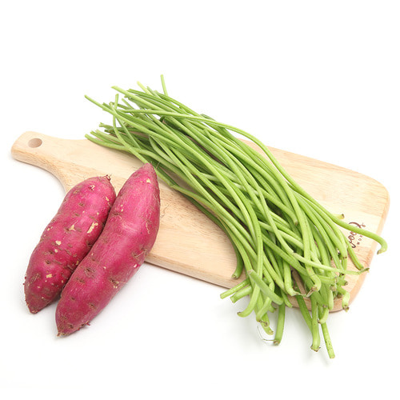
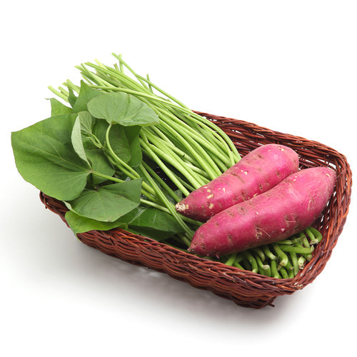

1. 소화가 잘 된다
고구마는 섬유질이 풍부하고 변비를 예방하는 데 도움을 준다. 실제로 2017년 Functional Foods in Health and Disease에 발표된 연구 결과에 따르면 고구마 소비는 유익한 장내 세균의 개선과도 관련이 있는 것으로 나타났다.
고구마는 섬유질이 풍부하고 변비를 예방하는 데 도움을 준다. 실제로 2017년 Functional Foods in Health and Disease에 발표된 연구 결과에 따르면 고구마 소비는 유익한 장내 세균의 개선과도 관련이 있는 것으로 나타났다.
2. 운동 경련 위험을 줄인다
격렬한 운동 후에 경련이 일어나는 것을 막고 싶다면 단백질바 대신 고구마를 먹는 것도 좋은 방법이다. 영양사 세디비는 “고구마의 칼로리는 감자와 동일하지만, 섬유질과 항산화 물질, 풍부한 칼륨이 들어있다”라며 “실제로 바나나에서 발견되는 칼륨의 2배를 함유하고 있다”라고 말했다. 따라서 칼륨 결핍과 관련된 경련 위험을 줄이는 데 도움이 될 것이다.
격렬한 운동 후에 경련이 일어나는 것을 막고 싶다면 단백질바 대신 고구마를 먹는 것도 좋은 방법이다. 영양사 세디비는 “고구마의 칼로리는 감자와 동일하지만, 섬유질과 항산화 물질, 풍부한 칼륨이 들어있다”라며 “실제로 바나나에서 발견되는 칼륨의 2배를 함유하고 있다”라고 말했다. 따라서 칼륨 결핍과 관련된 경련 위험을 줄이는 데 도움이 될 것이다.

3. 시력 향상에 도움을 준다
세디비는 “고구마는 비타민 A와 비타민 C가 풍부해 시력 건강에 도움을 준다”라고 말했다. 실제로 미국 안과 학회가 실시한 연구 결과에 따르면 고구마와 같은 음식에서 발견된 베타카로틴은 야맹증과 주변시 상실을 일으킬 수 있는 망막색소증 환자의 시력 저하율을 감소시켰다.
세디비는 “고구마는 비타민 A와 비타민 C가 풍부해 시력 건강에 도움을 준다”라고 말했다. 실제로 미국 안과 학회가 실시한 연구 결과에 따르면 고구마와 같은 음식에서 발견된 베타카로틴은 야맹증과 주변시 상실을 일으킬 수 있는 망막색소증 환자의 시력 저하율을 감소시켰다.
4. 면역력이 높아진다
Oregon Dietitian 설립자 버드는 “고구마는 비타민 A가 매우 높을 뿐만 아니라 비타민 C도 풍부하다”라며 “이는 모두 면역 체계를 강화하고 감염을 예방하는 데 도움을 준다”라고 말했다. 또한, “비타민 A 결핍은 면역력 저하, 특히 혈당 수치와 호흡기 감염과 관련이 있다”라고 덧붙였다.
Oregon Dietitian 설립자 버드는 “고구마는 비타민 A가 매우 높을 뿐만 아니라 비타민 C도 풍부하다”라며 “이는 모두 면역 체계를 강화하고 감염을 예방하는 데 도움을 준다”라고 말했다. 또한, “비타민 A 결핍은 면역력 저하, 특히 혈당 수치와 호흡기 감염과 관련이 있다”라고 덧붙였다.

5. LDL 콜레스테롤을 감소시킨다
영양사 클렐랜드는 “고구마에는 섬유질이 풍부해서 LDL 콜레스테롤을 낮추는 데 도움을 줄 수 있다”라고 말했다. LDL 콜레스테롤은 나쁜 콜레스테롤로 분류되며, 혈관에 각종 염증반응을 일으킨다. 높은 콜레스테롤을 낮추고 싶다면 고구마를 필수적으로 먹는 것도 좋은 방법이다.
영양사 클렐랜드는 “고구마에는 섬유질이 풍부해서 LDL 콜레스테롤을 낮추는 데 도움을 줄 수 있다”라고 말했다. LDL 콜레스테롤은 나쁜 콜레스테롤로 분류되며, 혈관에 각종 염증반응을 일으킨다. 높은 콜레스테롤을 낮추고 싶다면 고구마를 필수적으로 먹는 것도 좋은 방법이다.
6. 포만감이 오래 지속된다
To The Pointe Nutrition 소유주 파인은 “고구마는 탄수화물과 수용성 식이섬유의 훌륭한 공급원”이라고 강조했다. 수용성 식이섬유는 소화 속도를 늦추는 데 도움이 돼 인슐린과 체내 지방 용해 물질인 렙틴의 꾸준한 분비를 촉진할 뿐 아니라 식사 중 배부른 느낌을 촉진해 자연스럽게 음식 섭취량을 조절할 수 있게 도와준다.
To The Pointe Nutrition 소유주 파인은 “고구마는 탄수화물과 수용성 식이섬유의 훌륭한 공급원”이라고 강조했다. 수용성 식이섬유는 소화 속도를 늦추는 데 도움이 돼 인슐린과 체내 지방 용해 물질인 렙틴의 꾸준한 분비를 촉진할 뿐 아니라 식사 중 배부른 느낌을 촉진해 자연스럽게 음식 섭취량을 조절할 수 있게 도와준다.